Lays out a concrete four-step evaluation workflow (prove it's possible with a frontier model, set success criteria, test small-to-large, prompt-engineer the gap) with real numbers for replacing a Claude/foundation-model call with a small...
The talk frames right-sizing as a loop: prove a task is possible with a frontier model, sweep small-to-large models against a golden dataset, then close the remaining gap with prompt engineering and post-processing rather than a bigger model (ours).
“found that 4 seconds is the limit of believability for users, and many calls that you will make to large models are going to take longer than 4 seconds”
said at 01:36“token costs have been falling as of late, but total inference spend has been rising because agent can reasoning workloads consume tokens way faster than prices are dropping”
said at 02:36“An SLM takes about 25% of that. And a task-specific model takes about half of that over”
said at 06:17“SLMs, smaller language models, contain millions to billions of parameters. An LLM contains billions to, well, trillions”
said at 04:09“I like to think of this as prototype big, deploy small. Just repeat this to yourself. Prototype big. Think big. Go big. Deploy small”
said at 08:52“It's got an average latency of 2.9 seconds. It costs about $0.22 $0.22 to run this to run 14 of these tasks”
said at 14:05“when we take accuracy into account, the winner was actually Llama 3.2, which is the big green circle that's weighing in right here around the 90% for accuracy”
said at 17:09“it was the few shot prompt that one that made the biggest improvement”
said at 24:22“we've got uh 100% JSON validity, structural validity was 100%, factual consistency, there's only a little bit of a disagreement there”
said at 27:29Her 90%-accuracy Llama 3.2 result and the follow-on Standard Agents talk's 137x DeepSeek-vs-Sonnet cost figure are making the same structural argument (small models are 'good enough' for narrow tasks) from two independent benchmarks -- worth treating as corroborating rather than redundant when building the case internally (ours).
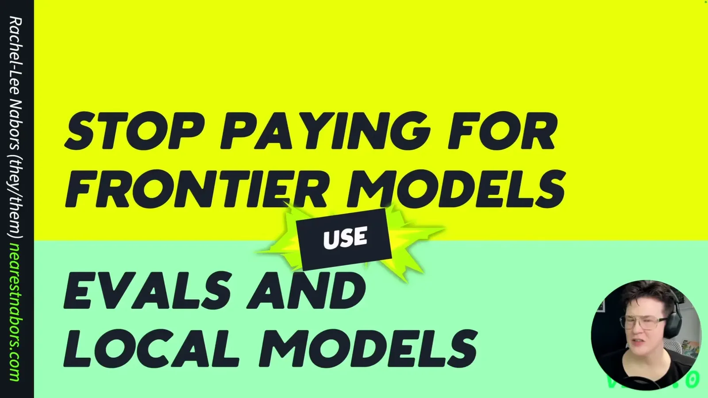
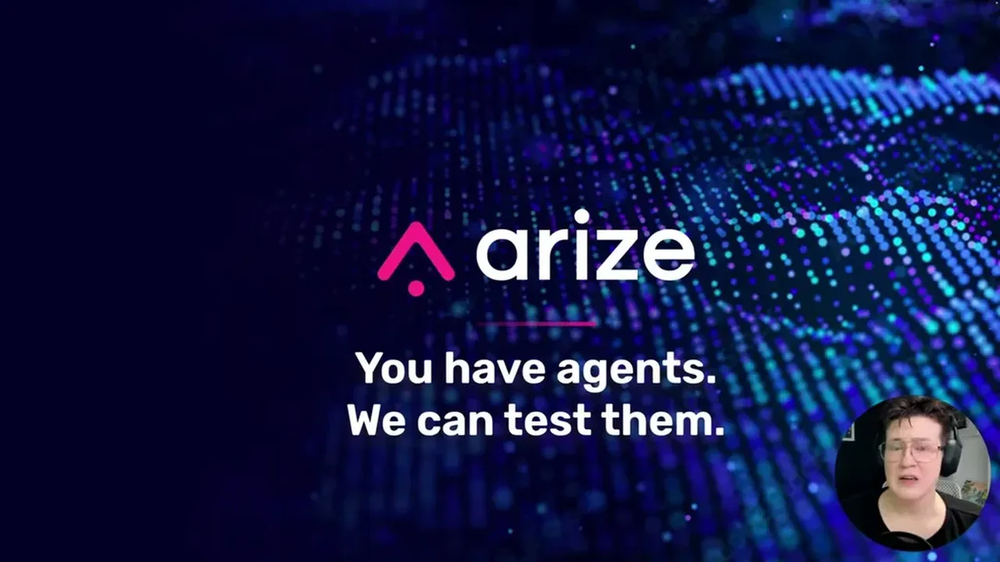
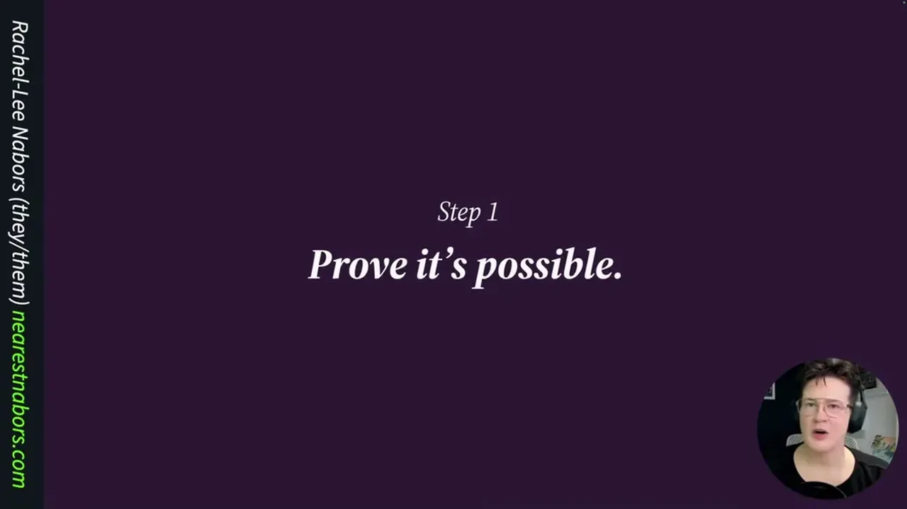
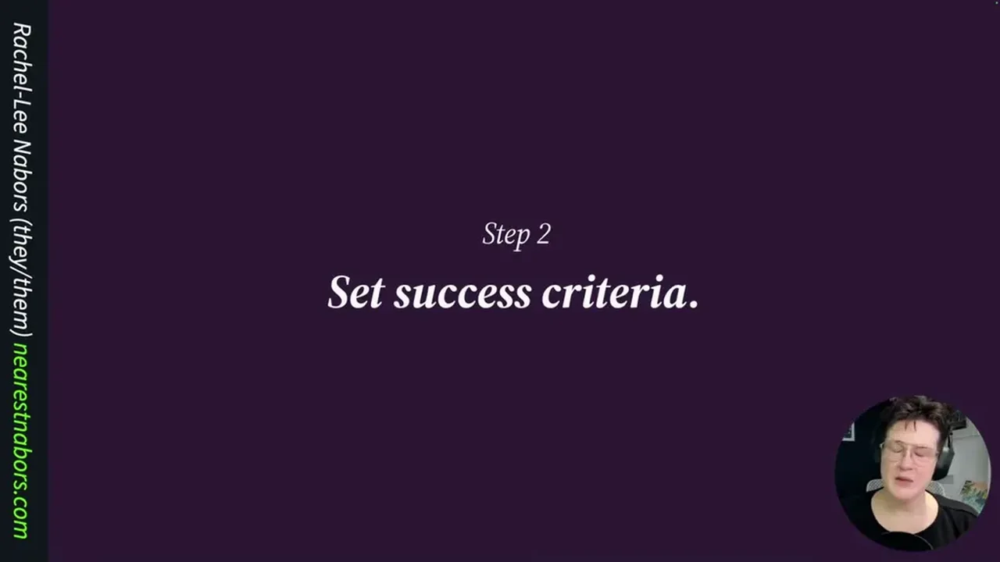
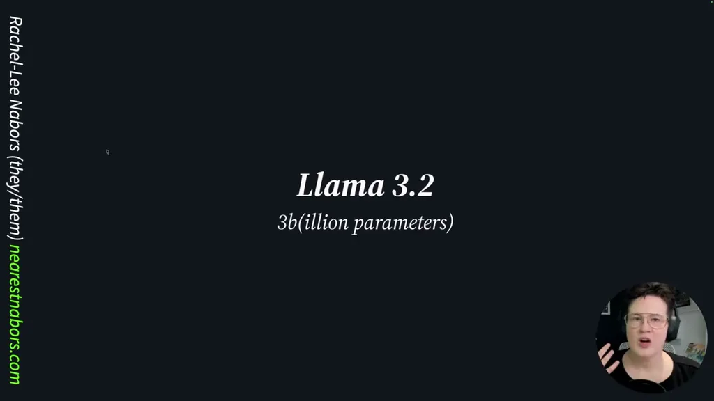
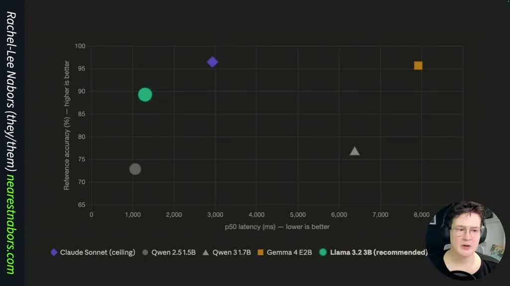
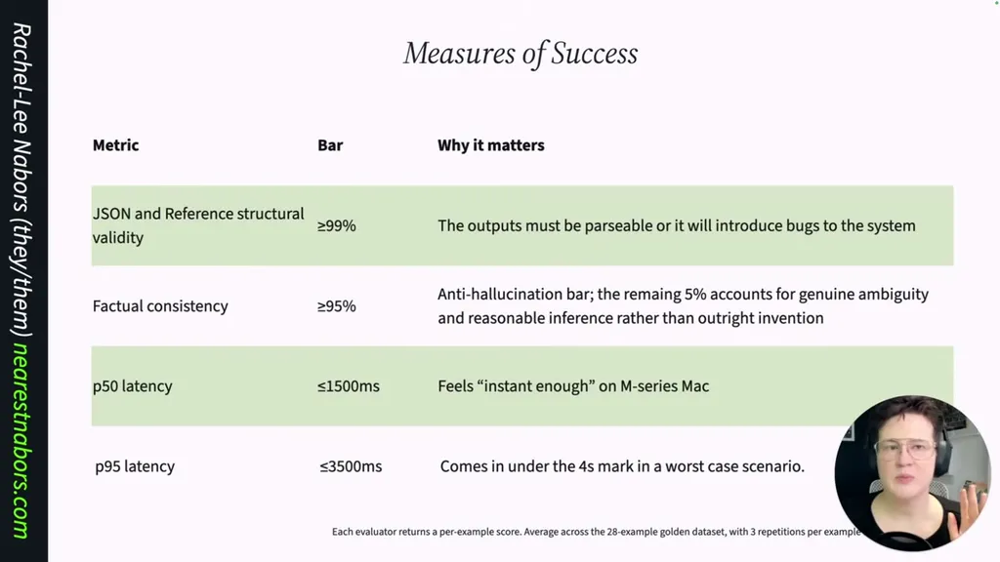
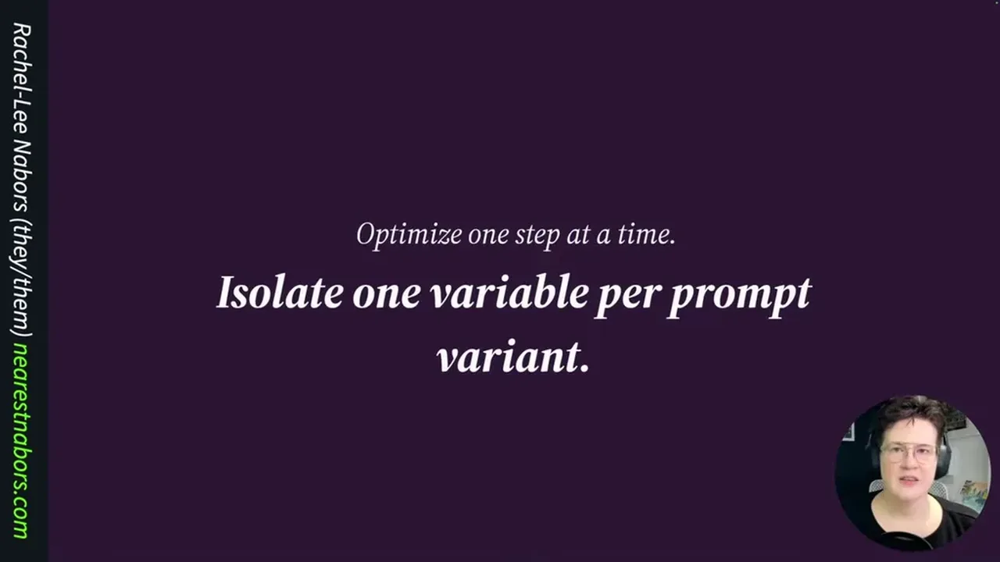
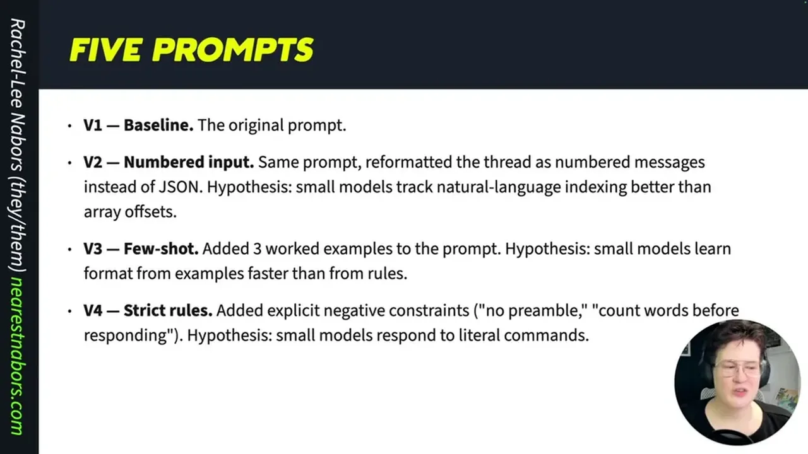
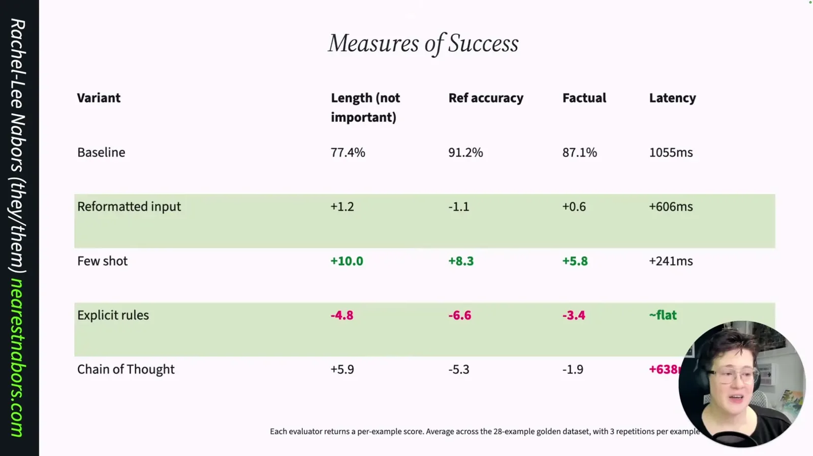
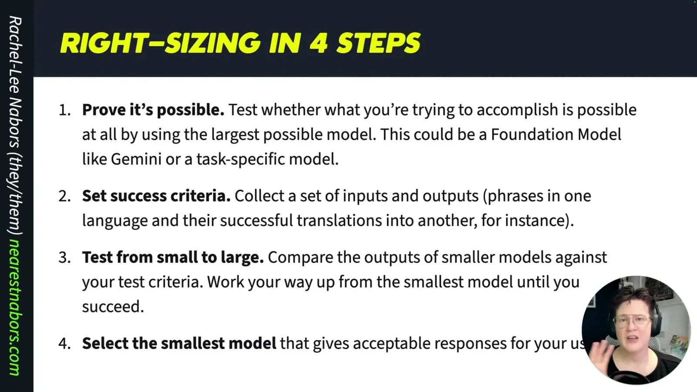
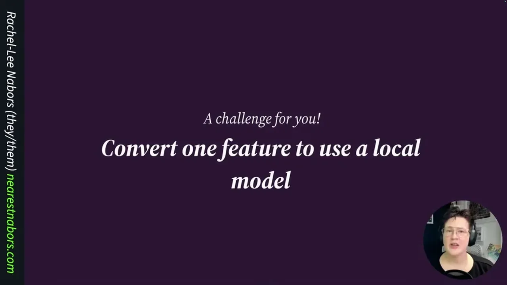
| Stance | Claim | t |
|---|---|---|
| warns | Research on response delays found 4 seconds is the limit of believability for users, and many large-model calls exceed that. | 01:36 |
| warns | Token costs have been falling but total inference spend is rising because agentic reasoning workloads consume tokens faster than prices drop. | 02:36 |
| asserts | A small language model consumes about a quarter of the energy an LLM uses to perform the same task, and a task-specific model uses about half of that again. | 06:17 |
| asserts | SLMs contain millions to billions of parameters while LLMs contain billions to trillions. | 04:09 |
| recommends | Prototype with the largest model to prove feasibility, then convert the production system to small/specialized models. | 08:52 |
| asserts | Claude Sonnet baseline had average latency of 2.9 seconds and cost $0.22 to run the 14-thread eval set. | 14:05 |
| asserts | When accuracy is weighed against latency, Llama 3.2 3B was the winning model at around 90% accuracy, faster than Gemma 4. | 17:09 |
| asserts | The few-shot prompt variant was the best performer, improving accuracy and length compliance while only increasing latency by 200 milliseconds. | 24:22 |
| asserts | After adding post-processing on top of the few-shot prompt, JSON validity and structural validity reached 100%, meeting or beating Claude Sonnet. | 27:29 |
Machine-readable copy embedded in this page (script#ontology) and in the corpus ontology.